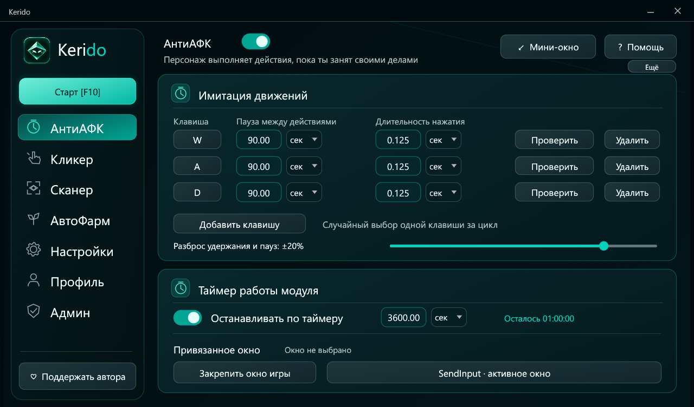

Ab 123
Выбери задачу
Открой нужный модуль. Для OCR выдели область экрана, в которой появляются символы.
Одни и те же клавиши. Сотни одинаковых кликов. Передай повторяющиеся действия kerido — и настрой всё под свой ритм.
Windows 10 / 11 · x64 · Lite бесплатно
01 / ВОЗМОЖНОСТИ
От простого клика до реакции на символы на экране. Выбери модуль и посмотри, как он устроен.
Выбери клавиши и паузы между нажатиями. kerido будет выполнять периодические действия, пока ты занят другими делами.
Например, повторять разрешённое действие в приложении через заданный интервал.

02 / ВСЁ ПОД КОНТРОЛЕМ
kerido работает на твоём компьютере: читает выбранную область экрана и отправляет нажатия клавиатуры или мыши.
Открой нужный модуль. Для OCR выдели область экрана, в которой появляются символы.
Укажи клавиши, интервалы и условия. Время можно задавать в секундах или минутах.
Запускай и останавливай модули горячими клавишами. Кнопка F10 останавливает автоматизацию.
Мини-окно и оверлей оставляют управление под рукой. Встроенный помощник объясняет настройки каждого модуля.
03 / ТВОЙ УРОВЕНЬ АВТОМАТИЗАЦИИ
Одно приложение и один аккаунт. Boost открывает дополнительные модули на выбранный срок.
Для привычных повторяющихся действий.
0 ₽
Бесплатно, без ограничения срока
Скачать LiteКогда нужно реагировать на происходящее.
400 ₽
за 30 дней доступа
Приём оплат пока не открыт. Тарифы указаны для ознакомления. Автоматических списаний нет.
Как будет предоставляться доступ и как обратиться за возвратомДля повторяемых действий на ПК: нажатий клавиш, кликов и реакции на символы в выбранной области экрана. Ты настраиваешь действие, время и горячие клавиши запуска. Применяй автоматизацию там, где это разрешено правилами используемой программы или сервиса.
В Lite бесплатно доступны Анти-АФК и Автокликер. Boost дополнительно открывает Экранный OCR и АвтоФарм на 3, 7 или 30 дней. Отдельную версию приложения устанавливать не нужно.
Для Boost нужен аккаунт kerido с пятизначным ID. Доступ проверяется сервером и включается в том же приложении. Сейчас продажа подписок не запущена: платёжное подключение готовится, поэтому на сайте нет формы оплаты.
Поведение зависит от программы и способа ввода. Некоторые приложения принимают только ввод в активном окне. Для распознавания выбранная область должна быть доступна для захвата; универсальная работа в полностью свёрнутом или перекрытом окне не гарантируется. Сначала проверь сценарий в своём приложении.
Используй общую клавишу F10 или элементы управления в основном, мини-окне и оверлее. У автокликера есть собственная клавиша запуска — по умолчанию F6. В режиме удержания он работает, пока нажата назначенная клавиша.
Компьютер с Windows 10 или 11, 64-разрядная система. Установщик запросит права администратора. Для входа в аккаунт и проверки Boost требуется интернет. На этой странице доступна сборка 2.1.3.

ТВОЙ СЛЕДУЮЩИЙ ШАГ
Попробуй kerido Lite и настрой первый сценарий.
Скачать для Windows Версия 2.1.3 · x64 · 7,6 МБ